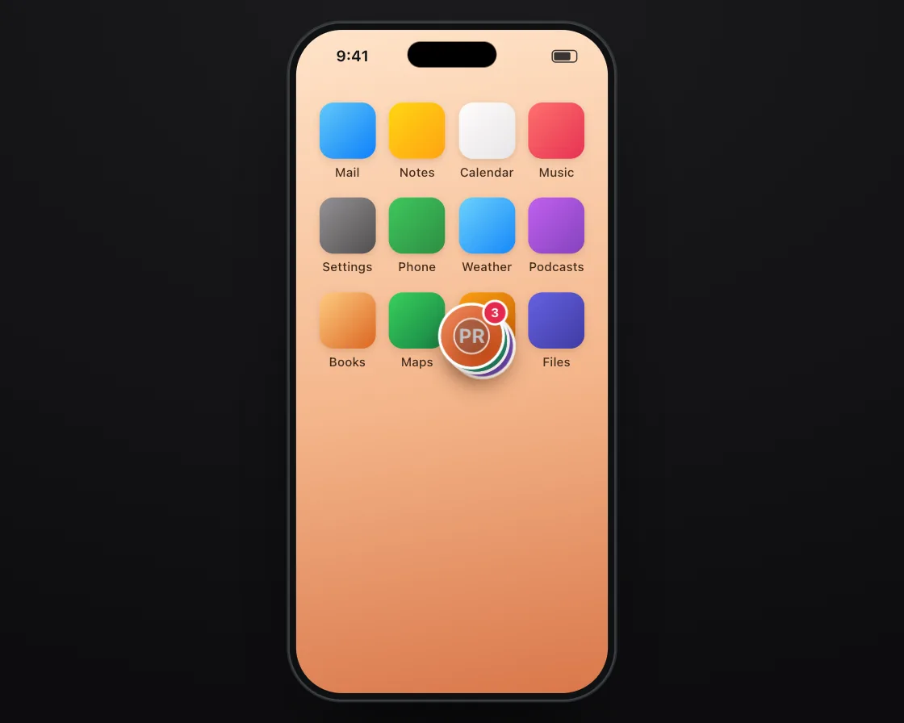

Chat heads
Chat heads is a DOM effect: each bubble chases the one in front on its own spring. One plain JavaScript file with no dependencies; add it with npx motion-library add chat-heads.

Open it live, tune it and copy the code
What is Chat heads?
A dragged stack of chat bubbles trails the front one, and on release flies to the nearest edge.
How does Chat heads work?
Each bubble is a 2D spring targeting the bubble ahead, so lag adds up down the chain; the throw velocity picks the docking edge.
How do I add Chat heads to my website?
- In your project folder, run
npx motion-library add chat-heads. It writesanimations/chat-heads.js. Needs Node 18 or newer. - Import it and call it with a container element that has a size:
import fx from './animations/chat-heads.js'; const stop = fx(document.querySelector('#hero')); - Call
stop()to clean up, for example when a component unmounts.
Every setting below is also a flag, so you can install it already tuned: npx motion-library add chat-heads --stiffness 700.
What settings can I tweak?
| Setting | Flag | Default | Range | Step |
|---|---|---|---|---|
| Stiffness | --stiffness | 260 | 60 to 700 | 10 |
| Damping | --damping | 0.68 | 0.3 to 1 | 0.01 |
Specifications
- Renderer
- DOM (CSS and the Web Animations API)
- Category
- Springs & physics
- Dependencies
- None
- File size
- 10.0 KB, unminified
- Interactive
- Yes: it responds to the pointer
- Reduced motion
- Respects prefers-reduced-motion
- Licence
- MIT-0: use it anywhere, no credit needed
Source code
// Chat heads: three floating conversation bubbles on a phone. A finger drags the front one around the screen and the others trail behind it, each one chasing the bubble in front on its own spring; let go and the stack flies to the nearest edge.
// Chaining springs gives the trail for free: every bubble lags a little more than the one ahead, so the group stretches out when you move fast and bunches up when you stop. The throw carries into the dock spring, so a flick decides which side it lands on.
const PARAMS = { stiffness: 260, damping: 0.68 };
export default function (stage) {
const reduce = matchMedia('(prefers-reduced-motion: reduce)').matches;
const K = 'chh', BG = 'radial-gradient(120% 100% at 50% 0%, #1b1b1e, #0d0d0f)', SC = 'linear-gradient(170deg,#ffe3c9,#f4b58a 55%,#d9774a)', SBC = '#15171a';
const app = (c, l) => `<div class="chh-app"><i style="background:${c}"></i><span>${l}</span></div>`;
const head = (c, ini) => `<div class="chh-h" style="background:${c}">${ini}</div>`;
const CSS = `.chh-grid{position:absolute;left:14px;right:14px;top:62px;display:grid;grid-template-columns:repeat(4,1fr);row-gap:16px;justify-items:center;opacity:.95}
.chh-app{display:grid;justify-items:center;gap:5px;font-size:10.5px;color:#3a2516;font-weight:500}.chh-app i{width:48px;height:48px;border-radius:12px;box-shadow:0 2px 6px rgba(80,30,0,.15)}
.chh-h{position:absolute;left:0;top:0;width:52px;height:52px;margin:-26px 0 0 -26px;border-radius:50%;display:grid;place-items:center;color:#fff;font-size:17px;font-weight:700;box-shadow:0 0 0 2.5px #fff,0 8px 18px rgba(60,20,0,.28);will-change:transform;z-index:20}
.chh-badge{position:absolute;right:-3px;top:-3px;min-width:18px;height:18px;border-radius:9px;background:#e5294c;color:#fff;font-size:10.5px;font-weight:700;display:grid;place-items:center;box-shadow:0 0 0 2px #fff}
.chh-tip{position:absolute;left:0;top:0;padding:8px 11px;border-radius:14px;background:#fff;font-size:12px;line-height:1.3;color:#15171a;box-shadow:0 6px 18px rgba(60,20,0,.18);width:150px;opacity:0;z-index:19;pointer-events:none}.chh-tip b{display:block;font-size:11px;color:#8a8a8f;font-weight:600}`;
const HTML = `<div class="chh-grid">${app('linear-gradient(135deg,#5ac8fa,#007aff)', 'Mail')}${app('linear-gradient(135deg,#ffd60a,#ff9f0a)', 'Notes')}${app('linear-gradient(135deg,#fff,#e5e5ea)', 'Calendar')}${app('linear-gradient(135deg,#ff6b6b,#e5294c)', 'Music')}
${app('linear-gradient(135deg,#8e8e93,#48484a)', 'Settings')}${app('linear-gradient(135deg,#34c759,#248a3d)', 'Phone')}${app('linear-gradient(135deg,#64d2ff,#0a84ff)', 'Weather')}${app('linear-gradient(135deg,#bf5af2,#7d3cbf)', 'Podcasts')}
${app('linear-gradient(135deg,#ffcc80,#d9601a)', 'Books')}${app('linear-gradient(135deg,#30d158,#0a7d40)', 'Maps')}${app('linear-gradient(135deg,#ff9f0a,#c45c00)', 'Photos')}${app('linear-gradient(135deg,#5e5ce6,#3634a3)', 'Files')}</div>
<div class="chh-tip"><b>Priya</b>Got the table by the window, see you soon</div>
${head('linear-gradient(135deg,#9c6ade,#5e3fb0)', 'TK')}${head('linear-gradient(135deg,#3dbb8a,#14775a)', 'SM')}${head('linear-gradient(135deg,#f08a5d,#c2410c)', 'PR<span class="chh-badge">3</span>')}`;
// ── phone shell: a 280 × 580 phone drawn in CSS, scaled to fit the stage (screen is 266 × 566)
const root = document.createElement('div');
root.className = K + '-root';
root.innerHTML = `<style>
.${K}-root{position:absolute;inset:0;overflow:hidden;background:${BG};font-family:system-ui,-apple-system,"Segoe UI",sans-serif;color:#15171a;user-select:none;-webkit-user-select:none}
.${K}-ph{position:absolute;left:50%;top:0;width:280px;height:580px;border-radius:46px;background:#0f1113;box-shadow:inset 0 0 0 1.5px #3a3f46,0 0 0 1px rgba(255,255,255,.13),0 40px 80px -30px rgba(0,0,0,.8);transform-origin:50% 0}
.${K}-sc{position:absolute;inset:7px;border-radius:39px;overflow:hidden;background:${SC};isolation:isolate;touch-action:none}
.${K}-is{position:absolute;left:50%;top:17px;width:76px;height:22px;margin-left:-38px;border-radius:12px;background:#000;z-index:30}
.${K}-sb{position:absolute;left:0;right:0;top:0;height:44px;padding:0 26px 0 34px;display:flex;align-items:center;justify-content:space-between;font-size:13px;font-weight:650;z-index:29;pointer-events:none;color:${SBC}}
.${K}-sb i{width:22px;height:11px;border-radius:3.5px;border:1.2px solid currentColor;box-sizing:border-box;padding:1px;opacity:.85}.${K}-sb i:after{content:"";display:block;height:100%;width:78%;background:currentColor;border-radius:1.5px}
.${K}-f{position:absolute;left:0;top:0;width:34px;height:34px;margin:-17px 0 0 -17px;border-radius:50%;background:rgba(60,60,67,.32);box-shadow:0 0 0 1.5px rgba(255,255,255,.85),0 4px 12px rgba(0,0,0,.18);z-index:40;pointer-events:none;opacity:0;transition:opacity .2s}
${CSS}
</style><div class="${K}-ph"><div class="${K}-sc"><div class="${K}-sb"><span>9:41</span><i></i></div>${HTML}<div class="${K}-f"></div></div><div class="${K}-is"></div></div>`;
stage.append(root);
const $ = s => root.querySelector('.' + K + '-' + s), $$ = s => [...root.querySelectorAll('.' + K + '-' + s)];
const phone = $('ph'), scr = $('sc'), fingerEl = $('f');
let scale = 1;
const fit = () => { const W = stage.clientWidth, H = stage.clientHeight; scale = Math.min(H * 0.94 / 580, W * 0.9 / 280); phone.style.transform = `translate(-50%, ${(H - 580 * scale) / 2}px) scale(${scale})`; };
const ro = new ResizeObserver(fit); ro.observe(stage); fit();
const finger = (x, y, on, press) => { fingerEl.style.opacity = on ? 1 : 0; fingerEl.style.transform = `translate(${x}px,${y}px) scale(${press ? 0.84 : 1})`; };
// a damped spring step (semi-implicit Euler, 4 substeps), which settles instantly under reduced motion, and Apple's rubber-band curve
const spring = (s, to, k, c, dt) => { if (reduce) { s.x = to; s.v = 0; return; } for (let i = 0; i < 4; i++) { const h = dt / 4; s.v += (-k * (s.x - to) - c * s.v) * h; s.x += s.v * h; } };
const rubber = (o, d, c) => o * d * c / (d + c * Math.abs(o));
// the simulated finger: keys are [ms, x, y, state(0 hidden, 1 hover, 2 pressed), linear?]; real touches take over for 2.5 s
const track = (keys, t) => { let i = 0; while (i < keys.length - 2 && t >= keys[i + 1][0]) i++; const a = keys[i], b = keys[i + 1]; let u = Math.min(1, Math.max(0, (t - a[0]) / ((b[0] - a[0]) || 1))); if (!a[4]) u = u < .5 ? 4 * u * u * u : 1 - Math.pow(-2 * u + 2, 3) / 2; return [a[1] + (b[1] - a[1]) * u, a[2] + (b[2] - a[2]) * u, a[3]]; };
const U = { on: false, x: 0, y: 0, last: -1e9 };
const toLocal = e => { const r = scr.getBoundingClientRect(); return [(e.clientX - r.left) / scale, (e.clientY - r.top) / scale]; };
const pd = e => { U.on = true; [U.x, U.y] = toLocal(e); U.last = performance.now(); try { scr.setPointerCapture(e.pointerId); } catch (_) {} };
const pm = e => { if (!U.on) return; [U.x, U.y] = toLocal(e); U.last = performance.now(); };
const pu = () => { if (U.on) { U.on = false; U.last = performance.now(); } };
scr.addEventListener('pointerdown', pd); scr.addEventListener('pointermove', pm); scr.addEventListener('pointerup', pu); scr.addEventListener('pointercancel', pu);
const unlisten = () => { scr.removeEventListener('pointerdown', pd); scr.removeEventListener('pointermove', pm); scr.removeEventListener('pointerup', pu); scr.removeEventListener('pointercancel', pu); };
let T0 = performance.now(), wasUser = false;
const input = (now, keys, loop) => {
if (now - U.last < 2500) { wasUser = true; finger(0, 0, false); return { x: U.x, y: U.y, down: U.on, t: -1, n: 0 }; }
if (wasUser) { wasUser = false; T0 = now; }
const t = (now - T0) % loop, [x, y, st] = track(keys, t);
finger(x, y, st > 0, st === 2);
return { x, y, down: st === 2, t, n: Math.floor((now - T0) / loop) };
};
const els = $$('h').reverse(), tip = $('tip'); // els[0] is the front bubble (Priya)
const P = els.map((_, i) => ({ x: { x: 228, v: 0 }, y: { x: 150 + i * 4, v: 0 } }));
const dock = { x: 228, y: 150 };
// ghost finger: pick up the stack on the right, swoop down and flick it to the left; later drag it back up the right side
const keys = [[0, 228, 150, 0], [500, 228, 150, 1], [700, 228, 150, 2], [1300, 150, 260, 2], [1900, 120, 380, 2], [1920, 120, 380, 2, 1], [2040, 70, 420, 1], [2250, 70, 420, 0],
[4800, 40, 420, 0], [5000, 40, 420, 1], [5200, 40, 420, 2], [5800, 150, 330, 2], [6400, 200, 170, 2], [6420, 200, 170, 2, 1], [6540, 250, 140, 1], [6750, 250, 140, 0], [9600, 228, 150, 0]];
let grab = false, vx = 0, vy = 0, lx = 0, ly = 0, settled = 0, last = performance.now(), raf;
function frame(now) {
const dt = Math.min(0.032, (now - last) / 1000); last = now;
const f = input(now, keys, 9600), lead = P[0];
const k = PARAMS.stiffness, c = 2 * Math.sqrt(k) * PARAMS.damping;
if (f.down) {
if (!grab) { grab = true; lx = f.x; ly = f.y; vx = vy = 0; }
vx = vx * 0.6 + (f.x - lx) / Math.max(dt, 0.001) * 0.4; vy = vy * 0.6 + (f.y - ly) / Math.max(dt, 0.001) * 0.4; lx = f.x; ly = f.y;
lead.x.x = f.x; lead.y.x = f.y; lead.x.v = vx; lead.y.v = vy; settled = 0;
} else {
if (grab) { grab = false; const ax = lead.x.x + lead.x.v * 0.25; dock.x = ax < 133 ? 38 : 228; dock.y = Math.max(110, Math.min(500, lead.y.x + lead.y.v * 0.12)); }
spring(lead.x, dock.x, k * 0.8, c, dt); spring(lead.y, dock.y, k * 0.8, c, dt);
if (Math.abs(lead.x.x - dock.x) < 2 && Math.abs(lead.x.v) < 20) settled += dt; else settled = 0;
}
const side = lead.x.x < 133 ? 1 : -1;
for (let i = 1; i < P.length; i++) { const a = P[i - 1], b = P[i]; spring(b.x, a.x.x - side * 5, k, c, dt); spring(b.y, a.y.x + 4, k, c, dt); }
P.forEach((p, i) => { els[i].style.transform = `translate(${p.x.x}px, ${p.y.x}px)`; });
const show = Math.max(0, Math.min(1, (settled - 0.5) * 4));
tip.style.opacity = show; tip.style.transform = `translate(${dock.x < 133 ? dock.x + 34 : dock.x - 184}px, ${dock.y - 20 + (reduce ? 0 : (1 - show) * 6)}px)`;
raf = requestAnimationFrame(frame);
}
raf = requestAnimationFrame(frame);
return () => { cancelAnimationFrame(raf); ro.disconnect(); unlisten(); root.remove(); };
}